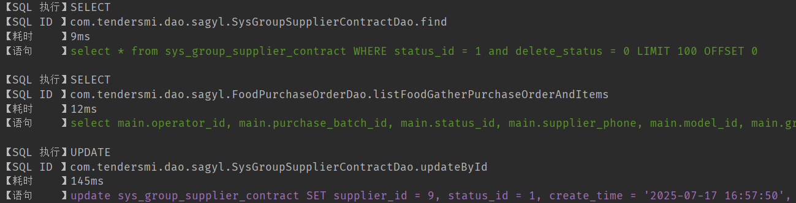

1、目的
- 代码着色，CRUD的SQL显示不同颜色
- 慢查询检测，慢查询SQL黄色标记
- 实际完整SQL控制台打印
- 可以在配置文件配置忽略打印的表

2、实现原理
- 创建一个类实现Interceptor接口。
- 在intercept方法中，获取执行的SQL信息，记录开始时间，执行方法，然后记录结束时间，计算耗时。
- 使用org.apache.ibatis.reflection.MetaObject和org.apache.ibatis.reflection.SystemMetaObject来获取SQL语句和参数。
- 将SQL和参数结合，形成可执行的完整SQL（注意：这里我们使用Mybatis提供的工具类ParameterHandler来获取参数并替换到SQL中可能比较复杂，实际上Mybatis的SQL日志打印通常是通过日志框架配置的，但这里我们通过拦截器实现）。
- 根据耗时决定打印颜色。
具体步骤（在拦截器中）：
- 拦截Executor的update和query方法。
- 获取BoundSql，通过BoundSql获取SQL字符串（带占位符）和参数对象。
- 通过BoundSql的ParameterMappings和参数对象，构建完整的SQL。
3、代码实现
- Java代码
import org.apache.ibatis.executor.Executor;
import org.apache.ibatis.mapping.BoundSql;
import org.apache.ibatis.mapping.MappedStatement;
import org.apache.ibatis.mapping.ParameterMapping;
import org.apache.ibatis.plugin.*;
import org.apache.ibatis.reflection.MetaObject;
import org.apache.ibatis.session.ResultHandler;
import org.apache.ibatis.session.RowBounds;
import org.apache.ibatis.type.TypeHandlerRegistry;
import org.springframework.beans.factory.annotation.Value;
import org.springframework.boot.autoconfigure.condition.ConditionalOnProperty;
import org.springframework.context.annotation.Bean;
import org.springframework.context.annotation.Configuration;
import java.text.SimpleDateFormat;
import java.util.*;
import java.util.concurrent.TimeUnit;
import java.util.regex.Pattern;
import java.util.stream.Collectors;
@Configuration
@ConditionalOnProperty(name = "mybatis.sql-log.enabled", havingValue = "true", matchIfMissing = true) //读取配置文件
public class SqlLogConfigPlus {
@Bean
public SqlLogInterceptor sqlLogInterceptor(
@Value("${mybatis.sql-log.slow-threshold:1000}") long slowThreshold,
@Value("${mybatis.sql-log.show-parameters:true}") boolean showParameters,
@Value("${mybatis.sql-log.ignore-table:}") String ignoredTables) {
SqlLogInterceptor interceptor = new SqlLogInterceptor();
interceptor.setSlowThreshold(slowThreshold);
interceptor.setShowParameters(showParameters);
interceptor.setIgnoredTables(ignoredTables);
return interceptor;
}
@Intercepts({
@Signature(type = Executor.class, method = "update", args = {
MappedStatement.class, Object.class}),
@Signature(type = Executor.class, method = "query", args = {
MappedStatement.class, Object.class, RowBounds.class, ResultHandler.class})
})
public static class SqlLogInterceptor implements Interceptor {
// ANSI颜色代码
private static final String ANSI_GREEN = "\u001B[32m"; // SELECT 查询
private static final String ANSI_BLUE = "\u001B[34m"; // INSERT 插入
private static final String ANSI_PURPLE = "\u001B[35m"; // UPDATE 更新
private static final String ANSI_RED = "\u001B[31m"; // DELETE 删除
private static final String ANSI_YELLOW = "\u001B[33m"; // 慢查询
private static final String ANSI_RESET = "\u001B[0m";
// 慢查询阈值(毫秒) - 可配置
private long slowThreshold = 1000;
private boolean showParameters = true;
// 需忽略的表名集合
private Set<String> ignoredTables = new HashSet<>();
@Override
public Object intercept(Invocation invocation) throws Throwable {
// 获取执行方法和参数
MappedStatement mappedStatement = (MappedStatement) invocation.getArgs()[0];
Object parameter = invocation.getArgs().length > 1 ? invocation.getArgs()[1] : null;
// 获取原始SQL
BoundSql boundSql = mappedStatement.getBoundSql(parameter);
String rawSql = boundSql.getSql();
// 如果SQL需要被忽略，则直接执行并返回，不进行日志打印
if (shouldIgnore(rawSql)) {
return invocation.proceed();
}
// 获取SQL ID
String sqlId = mappedStatement.getId();
// 获取带参数的SQL
String sqlWithParams = showParameters ?
getSqlWithParameters(mappedStatement, boundSql) : rawSql.replaceAll("\\s+", " ");
// 解析SQL操作类型
String operation = parseOperationType(sqlWithParams);
// 记录开始时间
long startTime = System.nanoTime();
try {
// 执行SQL
return invocation.proceed();
} finally {
// 计算耗时
long duration = TimeUnit.NANOSECONDS.toMillis(System.nanoTime() - startTime);
// 判断是否为慢查询
boolean isSlow = duration > slowThreshold;
// 确定颜色：慢查询优先使用黄色，否则根据操作类型选择
String color = isSlow ? ANSI_YELLOW : getColorByOperation(operation);
// 构建日志信息
String logMsg = String.format("\n【SQL 执行】%s %s\n【SQL ID 】%s\n【耗时 】%dms\n【语句 】%s%s%s",
operation, isSlow ? "(慢查询!)" : "",
sqlId,
duration,
color, sqlWithParams, ANSI_RESET);
// 打印到控制台
System.out.println(logMsg);
}
}
/**
* 判断当前SQL是否应该被忽略
*/
private boolean shouldIgnore(String sql) {
if (ignoredTables.isEmpty()) {
return false;
}
String lowerCaseSql = sql.toLowerCase();
for (String tableName : ignoredTables) {
// 使用正则表达式以确保匹配到的是完整的表名（单词边界）
// 避免 "user" 匹配到 "user_role"
String pattern = "\\b" + tableName + "\\b";
if (Pattern.compile(pattern).matcher(lowerCaseSql).find()) {
return true;
}
}
return false;
}
/**
* 根据操作类型获取颜色
*/
private String getColorByOperation(String operation) {
switch (operation) {
case "SELECT":
return ANSI_GREEN;
case "INSERT":
return ANSI_BLUE;
case "UPDATE":
return ANSI_PURPLE;
case "DELETE":
return ANSI_RED;
default:
return ANSI_RESET; // 默认无色
}
}
/**
* 解析SQL操作类型
*/
private String parseOperationType(String sql) {
// 去除多余空格并转为小写
String normalizedSql = sql.trim().toLowerCase();
// 识别操作类型
if (normalizedSql.startsWith("select")) {
return "SELECT";
} else if (normalizedSql.startsWith("insert")) {
return "INSERT";
} else if (normalizedSql.startsWith("update")) {
return "UPDATE";
} else if (normalizedSql.startsWith("delete")) {
return "DELETE";
} else if (normalizedSql.startsWith("merge")) {
return "MERGE";
} else if (normalizedSql.startsWith("call")) {
return "PROCEDURE";
} else if (normalizedSql.startsWith("create") || normalizedSql.startsWith("alter") || normalizedSql.startsWith("drop")) {
return "DDL";
} else if (normalizedSql.startsWith("truncate")) {
return "TRUNCATE";
} else if (normalizedSql.startsWith("with")) {
return "WITH";
} else {
// 尝试从第一个单词识别
int firstSpace = normalizedSql.indexOf(' ');
if (firstSpace > 0) {
String firstWord = normalizedSql.substring(0, firstSpace);
return firstWord.toUpperCase();
}
return "UNKNOWN";
}
}
/**
* 获取带实际参数的SQL
*/
private String getSqlWithParameters(MappedStatement mappedStatement, BoundSql boundSql) {
Object parameterObject = boundSql.getParameterObject();
List<ParameterMapping> parameterMappings = boundSql.getParameterMappings();
String sql = boundSql.getSql().replaceAll("[\\s]+", " ");
// 如果没有参数，直接返回原始SQL
if (parameterObject == null || parameterMappings.isEmpty()) {
return sql;
}
try {
org.apache.ibatis.session.Configuration configuration = mappedStatement.getConfiguration();
TypeHandlerRegistry typeHandlerRegistry = configuration.getTypeHandlerRegistry();
StringBuilder sqlBuilder = new StringBuilder();
int index = 0;
int paramIndex = 0;
while (index < sql.length()) {
char c = sql.charAt(index);
if (c == '?') {
if (paramIndex < parameterMappings.size()) {
ParameterMapping parameterMapping = parameterMappings.get(paramIndex);
Object value;
// 获取参数值
if (boundSql.hasAdditionalParameter(parameterMapping.getProperty())) {
value = boundSql.getAdditionalParameter(parameterMapping.getProperty());
} else if (parameterObject == null) {
value = null;
} else if (typeHandlerRegistry.hasTypeHandler(parameterObject.getClass())) {
value = parameterObject;
} else {
MetaObject metaObject = configuration.newMetaObject(parameterObject);
value = metaObject.getValue(parameterMapping.getProperty());
}
// 格式化参数值
sqlBuilder.append(formatParameter(value));
paramIndex++;
} else {
sqlBuilder.append(c);
}
} else {
sqlBuilder.append(c);
}
index++;
}
return sqlBuilder.toString();
} catch (Exception e) {
// 发生异常时返回原始SQL
return sql;
}
}
/**
* 格式化参数值为SQL可读形式
*/
private String formatParameter(Object parameter) {
if (parameter == null) {
return "NULL";
}
if (parameter instanceof Number) {
return parameter.toString();
}
if (parameter instanceof String) {
return "'" + parameter.toString().replace("'", "''") + "'";
}
if (parameter instanceof Date) {
SimpleDateFormat sdf = new SimpleDateFormat("yyyy-MM-dd HH:mm:ss");
return "'" + sdf.format((Date) parameter) + "'";
}
if (parameter instanceof Boolean) {
return (Boolean) parameter ? "1" : "0";
}
// 其他类型转为字符串并转义
return "'" + parameter.toString().replace("'", "''") + "'";
}
@Override
public Object plugin(Object target) {
return Plugin.wrap(target, this);
}
@Override
public void setProperties(Properties properties) {
// 支持从配置读取慢查询阈值
String threshold = properties.getProperty("slowThreshold");
if (threshold != null) {
this.slowThreshold = Long.parseLong(threshold);
}
// 是否显示参数
String showParams = properties.getProperty("showParameters");
if (showParams != null) {
this.showParameters = Boolean.parseBoolean(showParams);
}
// 读取要忽略的表
String ignoreTable = properties.getProperty("ignore-table");
if (ignoreTable != null && !ignoreTable.isEmpty()) {
this.setIgnoredTables(ignoreTable);
}
}
public void setSlowThreshold(long slowThreshold) {
this.slowThreshold = slowThreshold;
}
public void setShowParameters(boolean showParameters) {
this.showParameters = showParameters;
}
public void setIgnoredTables(String tables) {
if (tables != null && !tables.trim().isEmpty()) {
this.ignoredTables = Arrays.stream(tables.split(","))
.map(String::trim)
.map(String::toLowerCase)
.collect(Collectors.toSet());
}
}
}
}
- 配置文件
application-sqllog.yml
mybatis:
sql-log:
enabled: true
show-parameters: true
slow-threshold: 1000
ignore-table: portal_job,portal_permission,portal_client #不打印的表格